Les nommé·e·s
-
Dans la catégorie « Coup d'éclat artistique »
L’OUT d’or du coup d’éclat artistique récompense une oeuvre ou un·e artiste pour son traitement original et percutant des thématiques LGBTI. "Crave", de Léonie PernetElle a débuté sur le label culte Kill The DJ, a joué de la batterie aux côtés de Yuksek et vient de publier, sur InFiné Music, un premier album fulgurant : Crave. Lesbienne out, Léonie Pernet accompagne sa musique de messages poétiques et politiques, comme la vidéo du sublime "African Melancholia".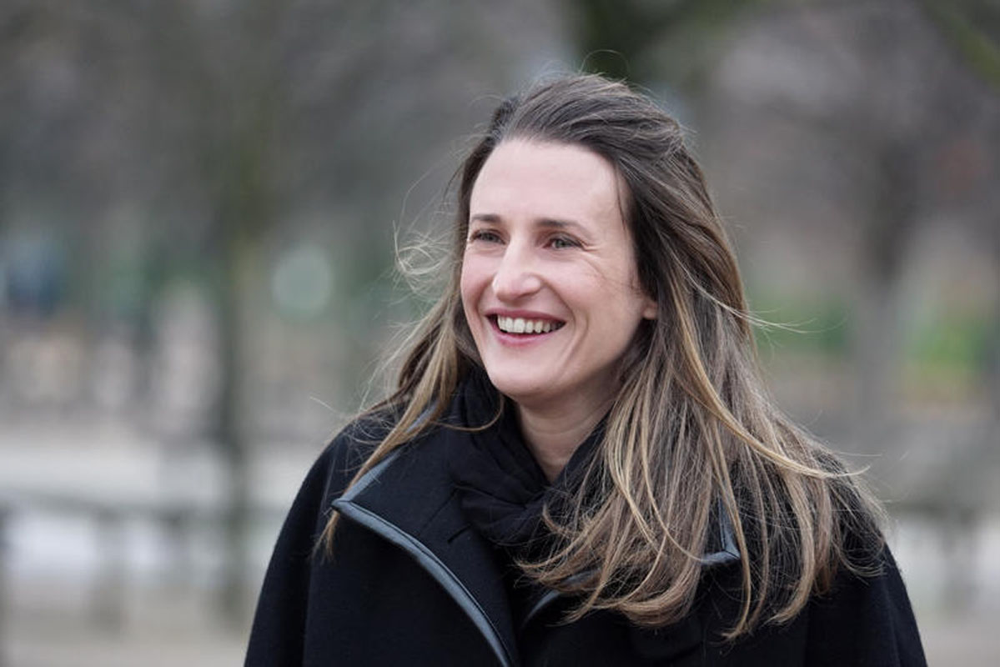Dix pour cent (saison 3), France 2Andréa (Camille Cottin) a enfin retrouvé la raison : c’est bien la belle Colette (Ophélia Kolb) qui fait battre son cœur ! Pour cette saison 3, la plus explosive membre de l’agence ASK se lance joyeusement dans un projet de famille homoparentale.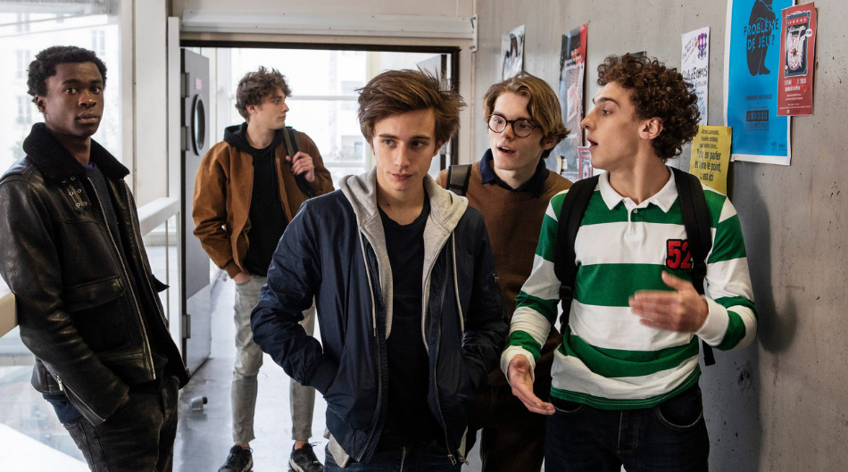Skam France (saison 3), francetv slashCentrée sur le personnage de Lucas (Axel Auriant), la saison 3 de Skam France le suit dans l'acceptation de son homosexualité. L’arrivée du charismatique Eliott (Maxence Danet-Fauvel) au lycée n’a pas fini de le troubler… Skam est l’un des grands succès de francetv slash cette année.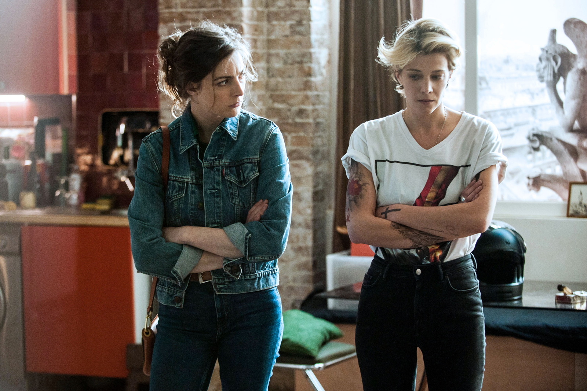"Vernon Subutex" (saison 1), Canal +Cathy Verney adapte les deux premiers tomes de la trilogie de Virginie Despentes. Autour de Vernon Subutex, ancien disquaire, une porn star au taquet, un scénariste minable, la sublime Marcia (femme trans parfaitement incarnée par Inès Rau) et la présence magnétique de La Hyène, incarnée par Céline Sallette… Elle justifie, à elle seule, de visionner les neuf épisodes.
"Crave", de Léonie PernetElle a débuté sur le label culte Kill The DJ, a joué de la batterie aux côtés de Yuksek et vient de publier, sur InFiné Music, un premier album fulgurant : Crave. Lesbienne out, Léonie Pernet accompagne sa musique de messages poétiques et politiques, comme la vidéo du sublime "African Melancholia".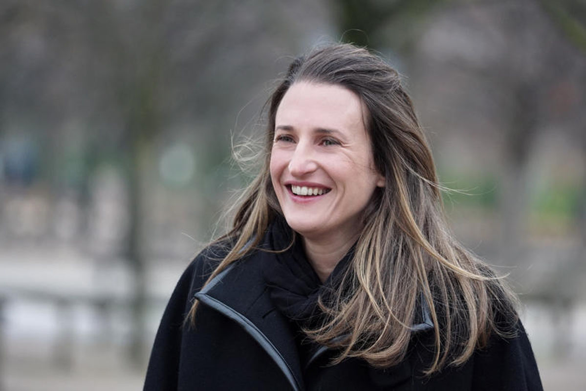Dix pour cent (saison 3), France 2Andréa (Camille Cottin) a enfin retrouvé la raison : c’est bien la belle Colette (Ophélia Kolb) qui fait battre son cœur ! Pour cette saison 3, la plus explosive membre de l’agence ASK se lance joyeusement dans un projet de famille homoparentale.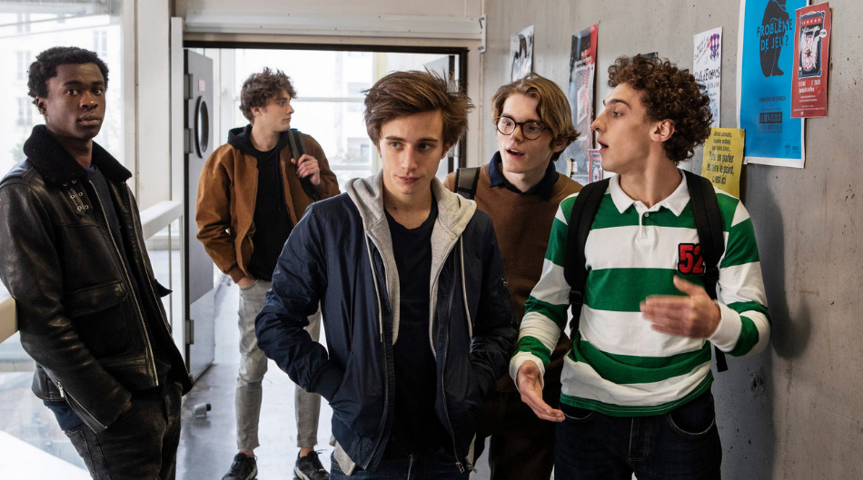Skam France (saison 3), francetv slashCentrée sur le personnage de Lucas (Axel Auriant), la saison 3 de Skam France le suit dans l'acceptation de son homosexualité. L’arrivée du charismatique Eliott (Maxence Danet-Fauvel) au lycée n’a pas fini de le troubler… Skam est l’un des grands succès de francetv slash cette année.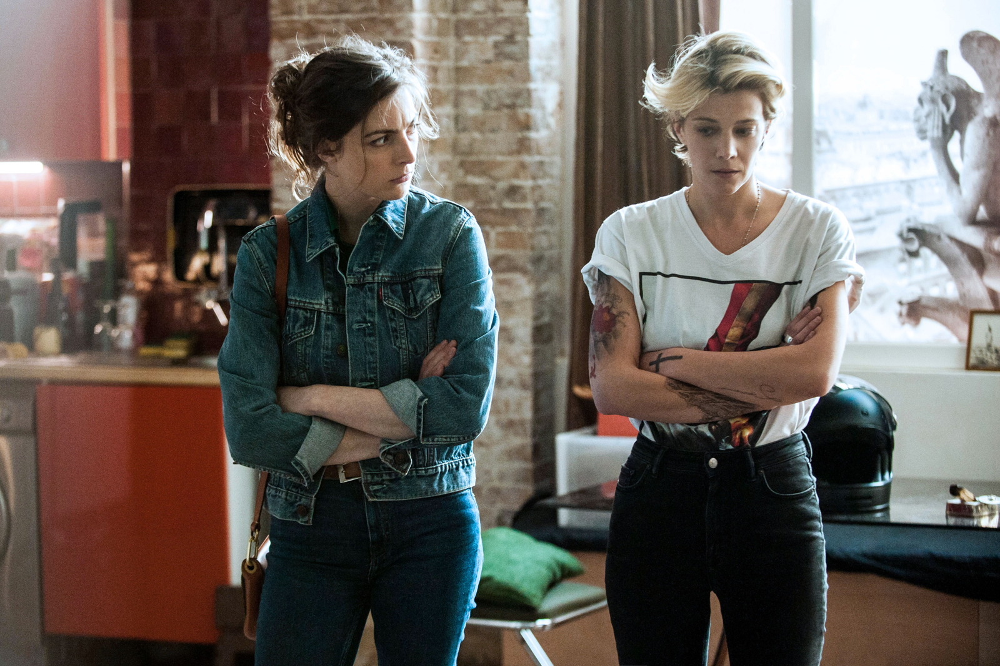"Vernon Subutex" (saison 1), Canal +Cathy Verney adapte les deux premiers tomes de la trilogie de Virginie Despentes. Autour de Vernon Subutex, ancien disquaire, une porn star au taquet, un scénariste minable, la sublime Marcia (femme trans parfaitement incarnée par Inès Rau) et la présence magnétique de La Hyène, incarnée par Céline Sallette… Elle justifie, à elle seule, de visionner les neuf épisodes. "Les Idoles", de Christophe HonoréChristophe Honoré est un touche-à-tout : en 2018, il était déjà nommé aux OUT d’or en tant que réalisateur pour "Plaire, aimer et courir vite" et comme écrivain pour "Ton Père" (Mercure de France). Cette année, c’est son travail de metteur en scène qui l’invite dans la sélection des OUT d'or. Avec la pièce "Les Idoles", il invente un purgatoire où se retrouvent, s’aiment et s’écharpent de grands disparus morts du sida : Jacques Demy, Bernard-Marie Koltès, Hervé Guibert, Jean-Luc Lagarce..."Tous les hommes désirent naturellement savoir", de Nina BouraouiDans son dernier livre, "Tous les hommes désirent naturellement savoir" (JC Lattès), Nina Bouraoui relate sa rencontre avec les nuits lesbiennes parisiennes à l’âge de 18 ans. Découverte en 1991 avec son premier roman, "La Voyeuse interdite" (Gallimard), qui reçoit le prix du livre Inter, Nina Bouraoui obtient le prix Renaudot en 2005 pour "Mes Mauvaises pensées" (Stock). Elle tient depuis 2018 une chronique dans le magazine Têtu.
"Les Idoles", de Christophe HonoréChristophe Honoré est un touche-à-tout : en 2018, il était déjà nommé aux OUT d’or en tant que réalisateur pour "Plaire, aimer et courir vite" et comme écrivain pour "Ton Père" (Mercure de France). Cette année, c’est son travail de metteur en scène qui l’invite dans la sélection des OUT d'or. Avec la pièce "Les Idoles", il invente un purgatoire où se retrouvent, s’aiment et s’écharpent de grands disparus morts du sida : Jacques Demy, Bernard-Marie Koltès, Hervé Guibert, Jean-Luc Lagarce..."Tous les hommes désirent naturellement savoir", de Nina BouraouiDans son dernier livre, "Tous les hommes désirent naturellement savoir" (JC Lattès), Nina Bouraoui relate sa rencontre avec les nuits lesbiennes parisiennes à l’âge de 18 ans. Découverte en 1991 avec son premier roman, "La Voyeuse interdite" (Gallimard), qui reçoit le prix du livre Inter, Nina Bouraoui obtient le prix Renaudot en 2005 pour "Mes Mauvaises pensées" (Stock). Elle tient depuis 2018 une chronique dans le magazine Têtu. SMITH (plusieurs expositions)Artiste trans représenté par la galerie parisienne des Filles du Calvaire, SMITH expose régulièrement ses oeuvres à travers le monde. Son travail indisciplinaire, à l'intersection des arts, de la science et de la philosophie, prend la forme de films, photographies, performances, sculptures, vidéos et conférences interrogeant les mutations de l'identité humaine. Ses travaux sont actuellement visibles dans le cadre de "Lignes de vies" au Mac Val (Musée d'art contemporain du Val-de-Marne) et de "Bodyfiction(s)" au Casino Luxembourg.
SMITH (plusieurs expositions)Artiste trans représenté par la galerie parisienne des Filles du Calvaire, SMITH expose régulièrement ses oeuvres à travers le monde. Son travail indisciplinaire, à l'intersection des arts, de la science et de la philosophie, prend la forme de films, photographies, performances, sculptures, vidéos et conférences interrogeant les mutations de l'identité humaine. Ses travaux sont actuellement visibles dans le cadre de "Lignes de vies" au Mac Val (Musée d'art contemporain du Val-de-Marne) et de "Bodyfiction(s)" au Casino Luxembourg. -
Dans la catégorie « Documentaire »
L’OUT d'or du documentaire récompense une production audiovisuelle ayant exploré l’une des nombreuses thématiques LGBTI au cours de ces douze derniers mois.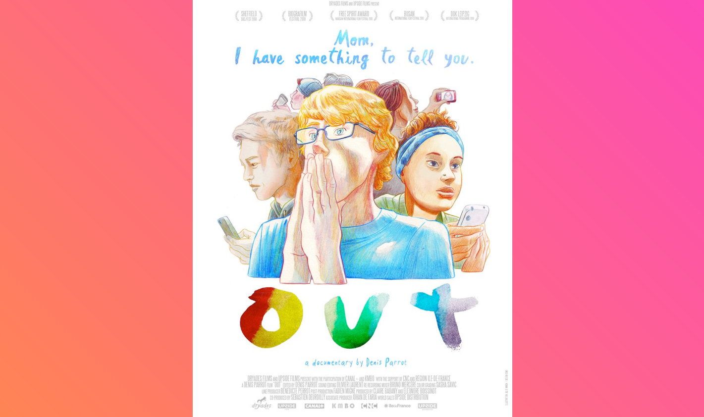"Coming Out", de Denis ParrotEn compilant des vidéos de coming out publiées sur les réseaux sociaux, Denis Parrot signe un documentaire touchant sur la façon dont les jeunes LGBTI à travers le monde ont choisi de révéler leur homosexualité ou leur transidentité à leur proches. Un film sur l’acceptation et la construction de soi. Sorti en salles le 1er mai 2019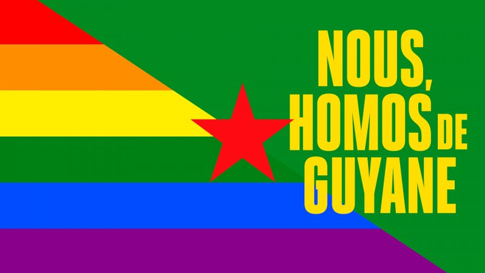"Nous, homos de Guyane", de Clément BelloriniDans un documentaire inédit, Clément Bellorini donne la parole aux gays guyanais qui ont choisi de se battre à Cayenne ou dans des territoires plus isolés pour faire tomber le tabou entourant l’homosexualité masculine dans ce département ultra-marin. Diffusé le 11 avril 2019 sur France Ô. "Les pionniers du Gai Marais", de Franck Thoraval et Thomas DutterDans cet épisode de la Fabrique de l’histoire, Franck Thoraval et Thomas Dutter explorent le déplacement des lieux de nuit homosexuels vers le quartier parisien du Marais dans les années 1970, qui "correspond à la fin de l’invisibilisation des gays dans l’espace public. Diffusé le 18 octobre 2018 sur France culture.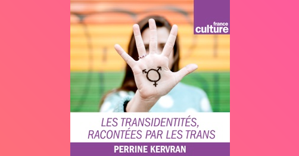"Les transidentités, racontées par les trans", de Perrine Kervran et Annabelle BrouardUne histoire des personnes trans en France racontée par ces dernières. Dans La Série documentaire, son émission sur France Culture, Perrine Kervran, tend le micro à Bambi, Hélène Hazéra, Karine Espinera ou encore Emmanuel Beaubatie pour narrer en quatre épisodes de 55 minutes une mobilisation de plusieurs décennies contre le pouvoir médical, la transphobie ou pour leur reconnaissance. Série diffusée du 27 au 30 août 2018 sur France culture, réalisée par Annabelle Brouard.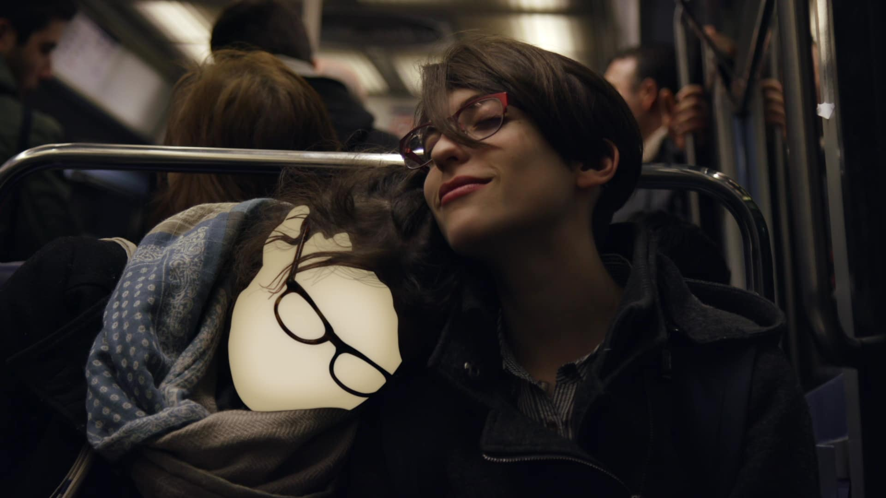"Ni d’Eve, ni d’Adam. Une histoire intersexe", de Floriane DevigneEntre la Suisse et la France, la documentariste Floriane Devigne porte un regard dépathologisant sur l’intersexuation au travers de témoignages des premièr·e·s concerné·e·s. Un film sur la quête d’identité et notre rapport aux normes de sexe et de genre particulièrement rare. Diffusé le 16 octobre 2018 sur France 2.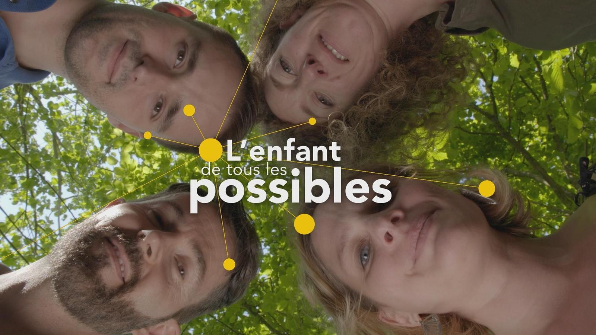"L’enfant de tous les possibles", de Lorène DebaisieuxFamilles monoparentales et homoparentales, PMA, GPA, coparentalité : dans un documentaire attendrissant, Lorène Debaisieux –déjà lauréate en 2017 avec "Devenir il ou elle"– filme sans préjugé de multiples schémas familiaux. Un film bienvenu qui raconte aussi le parcours du combattant de ces "nouvelles" familles. Diffusé le 29 janvier 2019 sur France 5.
"Les pionniers du Gai Marais", de Franck Thoraval et Thomas DutterDans cet épisode de la Fabrique de l’histoire, Franck Thoraval et Thomas Dutter explorent le déplacement des lieux de nuit homosexuels vers le quartier parisien du Marais dans les années 1970, qui "correspond à la fin de l’invisibilisation des gays dans l’espace public. Diffusé le 18 octobre 2018 sur France culture.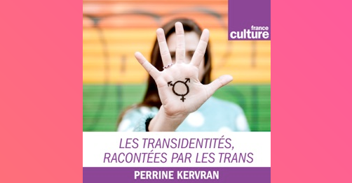"Les transidentités, racontées par les trans", de Perrine Kervran et Annabelle BrouardUne histoire des personnes trans en France racontée par ces dernières. Dans La Série documentaire, son émission sur France Culture, Perrine Kervran, tend le micro à Bambi, Hélène Hazéra, Karine Espinera ou encore Emmanuel Beaubatie pour narrer en quatre épisodes de 55 minutes une mobilisation de plusieurs décennies contre le pouvoir médical, la transphobie ou pour leur reconnaissance. Série diffusée du 27 au 30 août 2018 sur France culture, réalisée par Annabelle Brouard.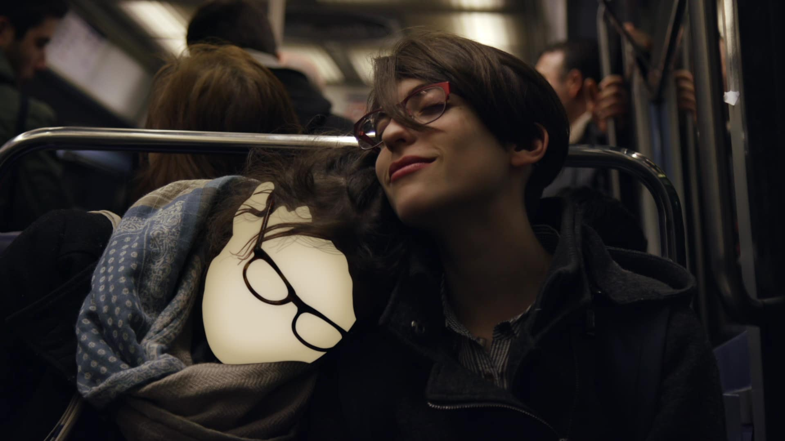"Ni d’Eve, ni d’Adam. Une histoire intersexe", de Floriane DevigneEntre la Suisse et la France, la documentariste Floriane Devigne porte un regard dépathologisant sur l’intersexuation au travers de témoignages des premièr·e·s concerné·e·s. Un film sur la quête d’identité et notre rapport aux normes de sexe et de genre particulièrement rare. Diffusé le 16 octobre 2018 sur France 2.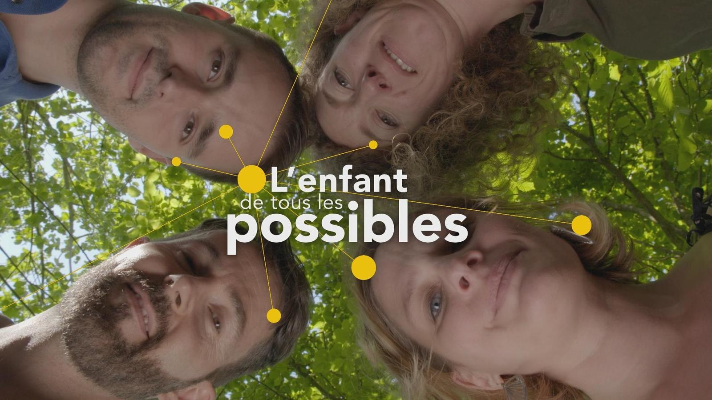"L’enfant de tous les possibles", de Lorène DebaisieuxFamilles monoparentales et homoparentales, PMA, GPA, coparentalité : dans un documentaire attendrissant, Lorène Debaisieux –déjà lauréate en 2017 avec "Devenir il ou elle"– filme sans préjugé de multiples schémas familiaux. Un film bienvenu qui raconte aussi le parcours du combattant de ces "nouvelles" familles. Diffusé le 29 janvier 2019 sur France 5. -
Dans la catégorie « Enquête / reportage »
La catégorie de l'enquête et du reportage réunit les sujets les plus marquants parus au cours des derniers mois.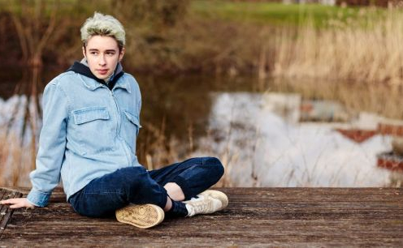"Ni fille, ni garçon : la révolution du genre", d'Elisabeth Philippe, Emilie Brouze, Audrey Cerdan, Barbara Krief, Nolwenn Le Blevennec, Agathe Ranc et Amandine Schmitt (L'Obs)"Femme ? Homme ? Ni l'un ni l'autre ? L'assignation à un genre fait de plus en plus débat, notamment chez les jeunes. Cette remise en question des stéréotypes pousse chacun d'entre nous à s'interroger sur son identité." Dossier sur la non-binarité, accompagnée de témoignages de huit personnes non binaires de 18 à 62 ans. Publié le 27 mars 2019.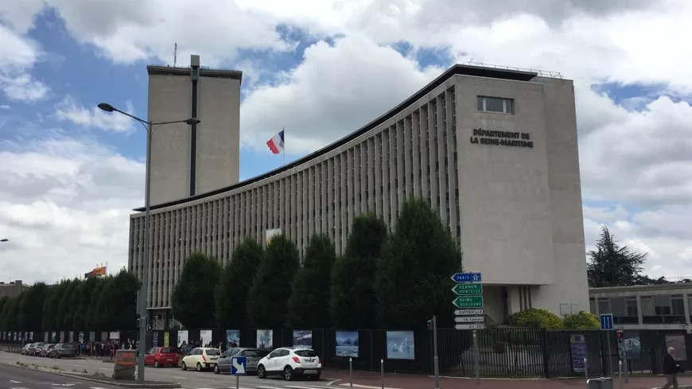"Adoption par les couples homosexuels : «Uniquement pour des enfants atypiques» en Seine-Maritime", de Coralie Moreau (France Bleu Normandie)"Depuis la loi sur le mariage pour tous, les couples homosexuels peuvent adopter, en théorie. Mais dans la réalité, le parcours est très compliqué. En Seine-Maritime, ces couples ne sont pas exclus... s'ils sont «ouverts aux profils d'enfants atypiques»", a révélé France Bleu Normandie. Diffusé le 18 juin 2018.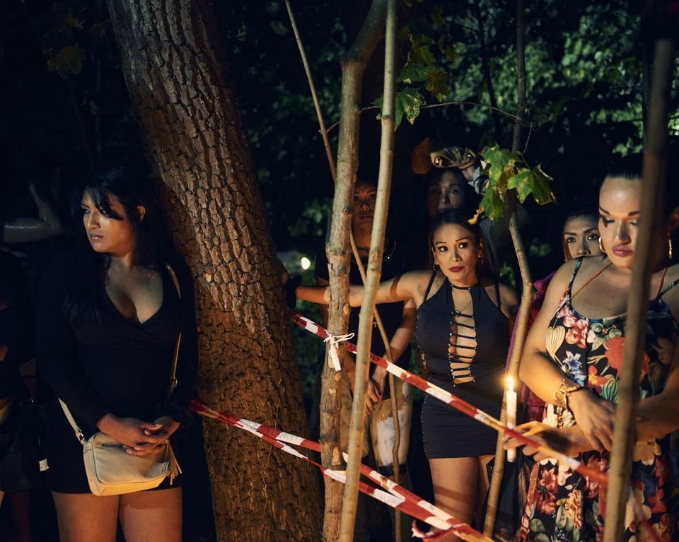"Meurtre de Vanesa Campos : «Ils ont instauré un climat de terreur»", d'Anaïs Moran (Libération)"Dans la nuit du 16 au 17 août, la prostituée trans de 36 ans a été abattue d’une balle dans le thorax au bois de Boulogne. Ses amies, travailleuses du sexe comme elle, dénoncent l’indifférence des autorités et l’inaction de la police face aux agressions dont elles étaient victimes depuis trois ans." Publié le 26 août 2018.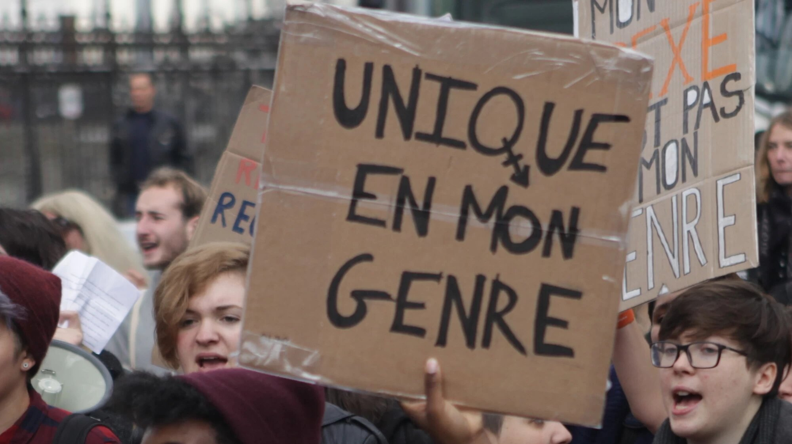"Transphobie à l'hôpital : «Un médecin a refusé de me toucher»", de Bruno Lus (Vice)"Durant leur transition, les personnes trans sont confrontées au corps médical. Souvent pour le pire." Enquête auprès de personnes trans, de militant·e·s et de médecins sur les discriminations dont sont victimes les personnes trans en milieu médical. Publié le 31 mai 2018.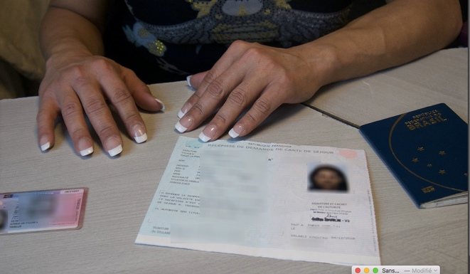"La France veut renvoyer au Brésil des personnes trans séropositives", de Louise Fessard (Mediapart)"Alors que Jair Bolsonaro est arrivé au pouvoir au Brésil, la France a délivré plusieurs obligations de quitter le territoire à des personnes brésiliennes séropositives, souvent transgenres. Certaines vivent depuis plusieurs années en France, où elles disposaient jusqu’alors de titres de séjour provisoires au nom de l’accès aux soins." Publié le 12 mars 2019.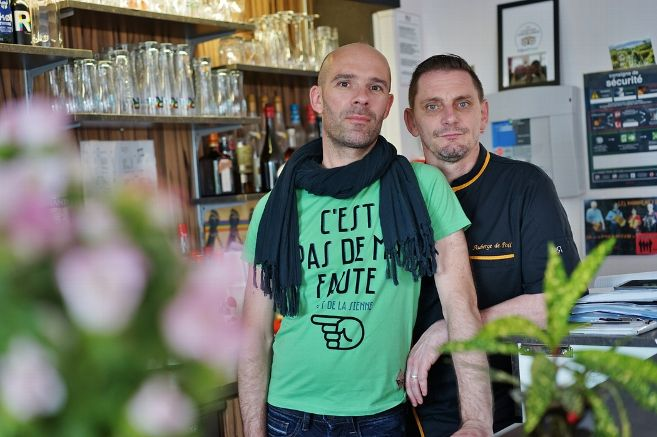"Victime d'actes malveillants, les aubergistes de Poil jettent l'éponge deux ans après leur arrivée", de Philippe Dépalle (Le Journal du Centre)Récit des deux années que Stéphane et Pascal ont passé à Poil, dans la Nièvre, où ils avaient repris l'auberge locale. Ils sont partis à l'automne dernier, découragés par des actes malveillants qu'ils qualifient d'"homophobie passive". Publié le 6 juin 2018.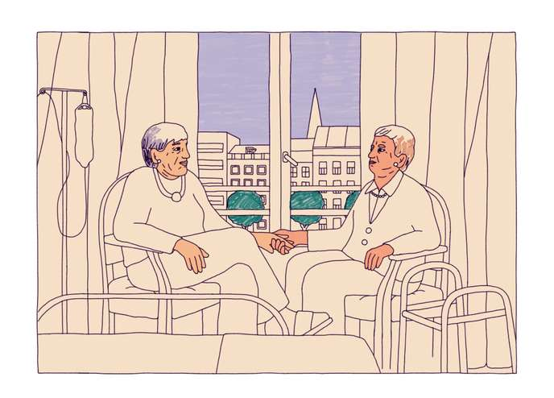"L'homosexualité, interdite de séjour en Ehpad", de Victor Castanet (M, le magazine du Monde)"À 89 et 100 ans, elles ont décidé de s’aimer, malgré l’âge et malgré l’Ehpad. Une exception, car en maison de retraite, les seniors LGBT, stigmatisés par les résidents et le personnel, se rendent invisibles. Et s’isolent." Publié le 8 mars 2019. -
Dans la catégorie « Personnalité LGBTI de l'année »
 La personnalité LGBTI de l'année est désigné par le vote du publicDécouvrez la liste des nommé·e·s et votez à en cliquant ici.
La personnalité LGBTI de l'année est désigné par le vote du publicDécouvrez la liste des nommé·e·s et votez à en cliquant ici. -
Dans la catégorie « Podcast »
En développement depuis plusieurs années, le podcast natif à permis à des journalistes d'aborder et de faire entendre des discours minoritaires auparavant absent des médias généralistes. Pourtant, leurs auteur·rice·s ne sont souvent pas reconnu·e·s à l'heure actuelle comme des journalistes au sens de la loi.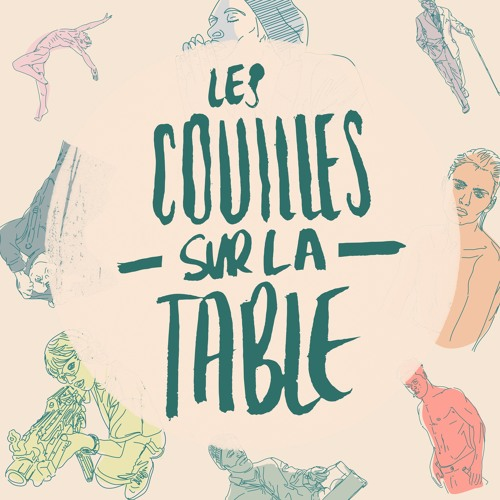Les couilles sur la table (Binge Audio)Dans Les Couilles sur la table, la journaliste Victoire Tuaillon explore les masculinités plurielles. À travers des entretiens, elle questionne et déconstruit les normes de la virilité. Elle a notamment réalisé un long échange avec le philosophe Paul B. Preciado sur la fabrication du genre.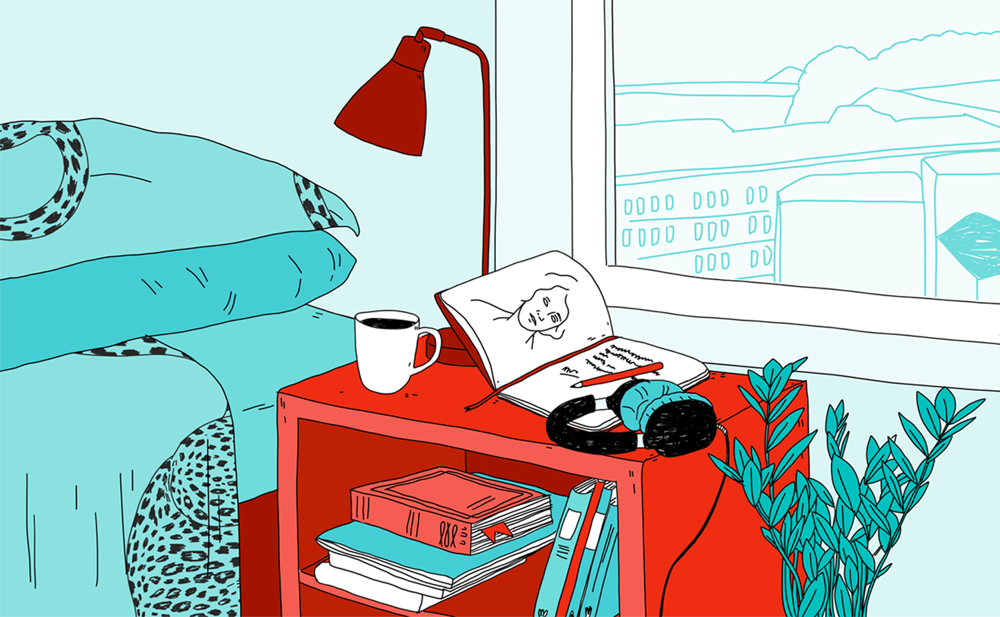Un podcast à soi (Arte Radio)Tous les premiers mercredis du mois, la journaliste Charlotte Bienaimé publie un épisode d’Un podcast à soi sur Arte Radio. Elle y explore des questions intimes et politiques à travers les récits croisés de femmes. Parmi les épisodes marquants : Ainsi soient-elles, avec la voix d'une religieuse lesbienne, ainsi qu'un épisode centré sur la vie des lesbiennes : Entre femmes.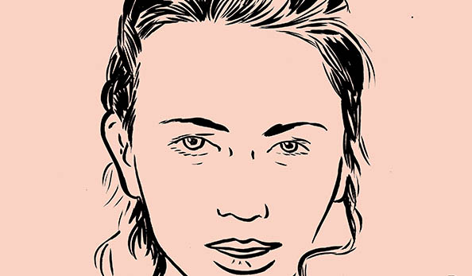La Poudre (Nouvelles écoutes)Un jeudi sur deux, la journaliste Lauren Bastide invite une femme “de son époque” à se raconter dans La Poudre. Régulièrement, elle donne la parole à des personnalités racisées ou issues de minorités. Elle a notamment interviewé l’écrivaine Niviaq Korneliussen, groënlandaise et lesbienne. Elle a également réalisé des épisodes spéciaux inclusifs, comme Les dessinatrices et Sexe.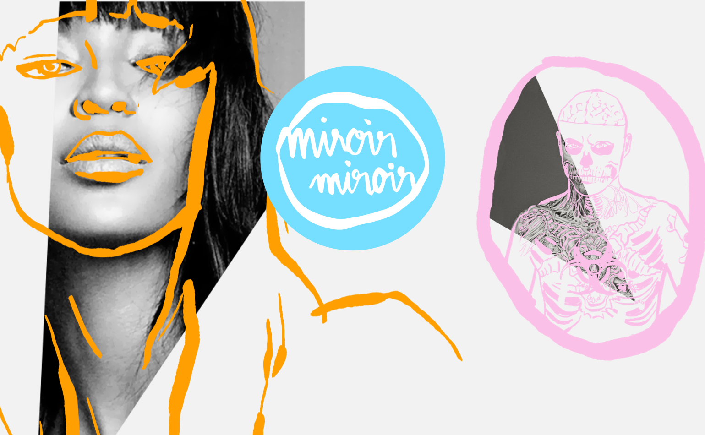Miroir miroir (Binge Audio)Dans Miroir Miroir, la journaliste Jennifer Padjemi regarde les corps et analyse leurs représentations dans les médias. Cette année, elle s'est interrogée sur l'invisibilité des lesbiennes avec la journaliste Marie Kirschen. Elle s'est aussi penchée sur le lien entre les hommes gays et la pop culture avec Maxime Donzel.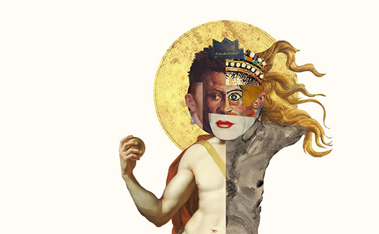Garçons"Être visible, c'est aussi avoir une voix." Garçons est un podcast indépendant créé par Antoine, 27 ans, pour donner la parole à des hommes gays et féministes. À chaque épisode, l'un d'entre eux raconte son histoire. Paternité, séropositivité, militantisme... : la série aborde avec justesse des thématiques variées. -
Dans la catégorie « Presse étrangère – Prix Xulhaz Mannan »
La catégorie "presse étrangère" fait le tour du monde pour rassembler des initiatives et des productions journalistiques qui portent une même volonté : un soutien clamé haut et fort de la communauté LGBTI dans leur pays d’origine ou ailleurs. Le prix est baptisé du nom du fondateur du seul média LGBT du Bangladesh, assassiné en 2016.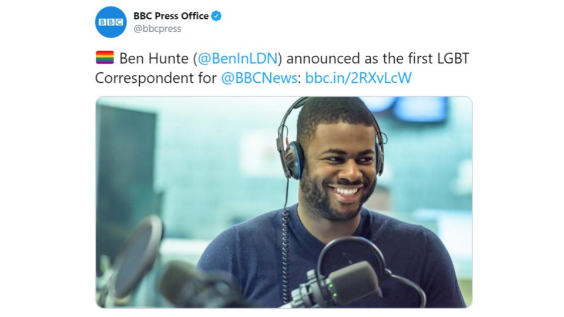BBC News (Royaume-Uni)En décembre 2018, BBC News a nommé le journaliste gay Ben Hunte pour couvrir spécifiquement les questions LGBT. Une première. Ben Hunte avait précédemment occupé le poste de présentateur télé sur BBC Africa. Broadly (États-Unis)Broadly, département du média américain Vice, a lancé en mars 2019 une banque d’images intitulée The Gender Spectrum Collection. Destinée aux médias et utilisable gratuitement, elle met en scène des personnes transgenres et non binaires. Broadly incite ainsi les médias à abandonner les représentations stéréotypées pour accompagner leurs articles sur ces thématiques, mais également à utiliser cette banque d'images pour illustrer tout type de sujets.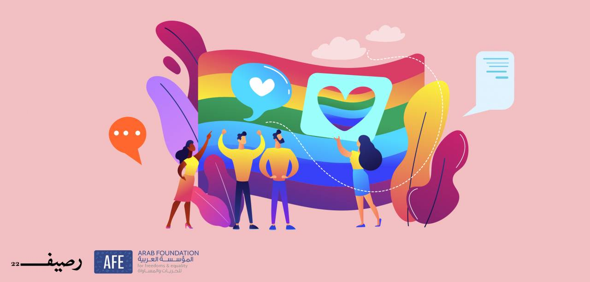Raseef22 (Liban)En avril 2019, le média en ligne indépendant libanais Raseef22 a débuté un partenariat avec la Fondation arabe des libertés et de l’égalité. L’enjeu : Raseef22 s’engage à publier, pendant six mois et de manière quotidienne, des articles exhaustifs autour des sexualités et de l’identité du genre telles que vécues au Moyen-Orient, en collaboration avec des chercheurs et des activistes.
Broadly (États-Unis)Broadly, département du média américain Vice, a lancé en mars 2019 une banque d’images intitulée The Gender Spectrum Collection. Destinée aux médias et utilisable gratuitement, elle met en scène des personnes transgenres et non binaires. Broadly incite ainsi les médias à abandonner les représentations stéréotypées pour accompagner leurs articles sur ces thématiques, mais également à utiliser cette banque d'images pour illustrer tout type de sujets.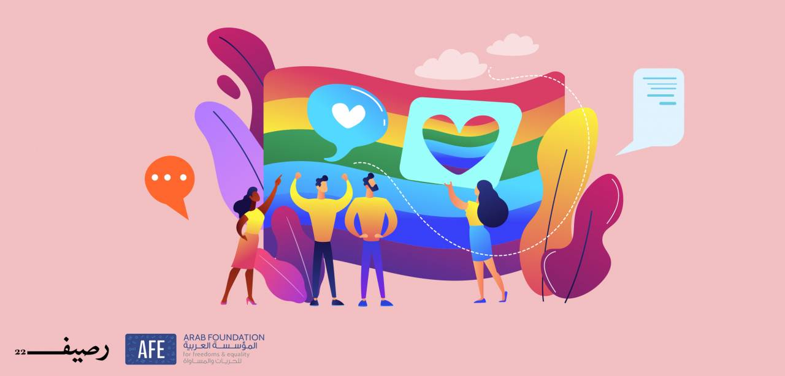Raseef22 (Liban)En avril 2019, le média en ligne indépendant libanais Raseef22 a débuté un partenariat avec la Fondation arabe des libertés et de l’égalité. L’enjeu : Raseef22 s’engage à publier, pendant six mois et de manière quotidienne, des articles exhaustifs autour des sexualités et de l’identité du genre telles que vécues au Moyen-Orient, en collaboration avec des chercheurs et des activistes. Folha de Sao Paulo (Brésil)Un an jour pour jour après l’assassinat de Marielle Franco, conseillère municipale de Rio de Janeiro, le quotidien Folha de Sao Paulo publie la lettre que lui adresse sa veuve, l’architecte et militante pour les droits LGBT Mônica Benício. Au fil de cet hommage posthume, elle lui promet que la lutte contre la haine, la corruption et l’intolérance se poursuit toujours. Folha de Sao Paulo a par ailleurs largement couvert les avancées de l'enquête, ainsi que les conséquences de l'assassinat de Marielle Franco.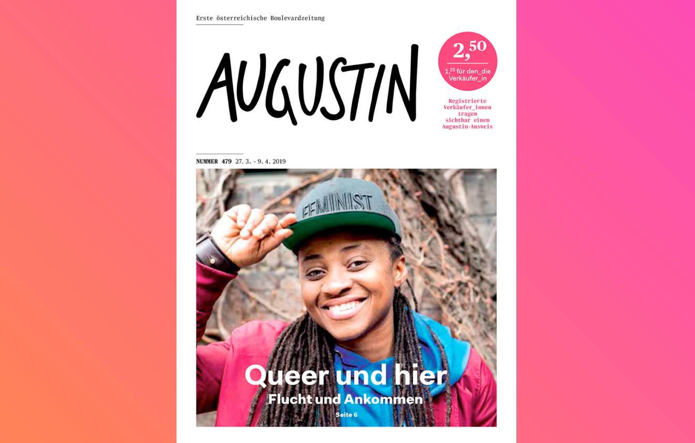Augustin (Autriche)Augustin est un journal de rue autrichien vendu par des personnes sans emploi et sans domicile fixe. Pour le numéro d'avril 2019, la rédaction fait un focus sur les réfugié·e·s queers et consacre sa une à Henrie Dennis, activiste lesbienne originaire du Nigéria et installée en Autriche, où elle a fondé le réseau Afro Rainbow Austria.
Folha de Sao Paulo (Brésil)Un an jour pour jour après l’assassinat de Marielle Franco, conseillère municipale de Rio de Janeiro, le quotidien Folha de Sao Paulo publie la lettre que lui adresse sa veuve, l’architecte et militante pour les droits LGBT Mônica Benício. Au fil de cet hommage posthume, elle lui promet que la lutte contre la haine, la corruption et l’intolérance se poursuit toujours. Folha de Sao Paulo a par ailleurs largement couvert les avancées de l'enquête, ainsi que les conséquences de l'assassinat de Marielle Franco.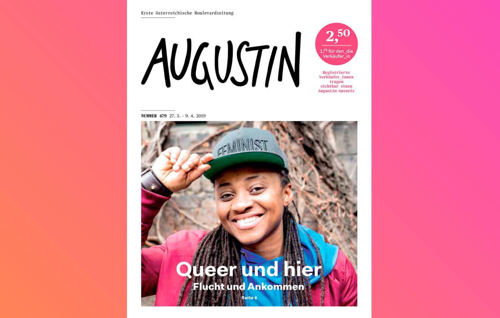Augustin (Autriche)Augustin est un journal de rue autrichien vendu par des personnes sans emploi et sans domicile fixe. Pour le numéro d'avril 2019, la rédaction fait un focus sur les réfugié·e·s queers et consacre sa une à Henrie Dennis, activiste lesbienne originaire du Nigéria et installée en Autriche, où elle a fondé le réseau Afro Rainbow Austria. CBC (Canada)Dans la troisième saison de son podcast d'investigation "Uncover", intitulée "The Village" et diffusée en 2019 par l'audiovisuel public canadien, le journaliste Justin Ling explore une série de meurtres et d’enlèvements à l’encontre d’hommes gays –racisés pour la plupart–, perpétrée à Toronto dans les années 70 et longtemps négligée par la police – jusqu’à une arrestation en 2018.
CBC (Canada)Dans la troisième saison de son podcast d'investigation "Uncover", intitulée "The Village" et diffusée en 2019 par l'audiovisuel public canadien, le journaliste Justin Ling explore une série de meurtres et d’enlèvements à l’encontre d’hommes gays –racisés pour la plupart–, perpétrée à Toronto dans les années 70 et longtemps négligée par la police – jusqu’à une arrestation en 2018. -
Dans la catégorie « Rédaction engagée »
L'OUT d'or de la rédaction engagée distingue le travail de long cours mené par toute une équipe pour traiter des thématiques LGBTI de manière respectueuse.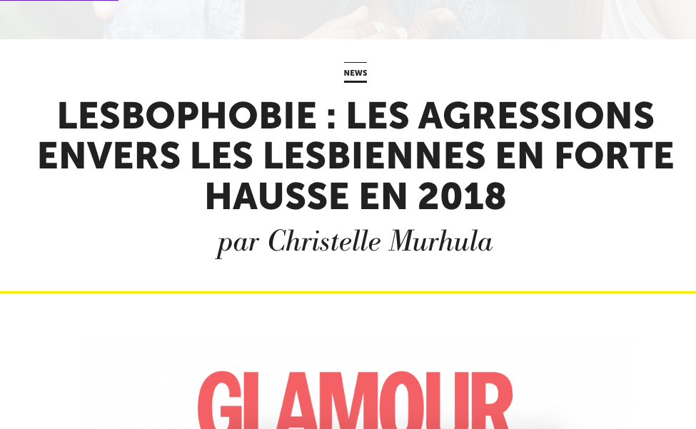GlamourLe magazine féminin publie de nombreux articles concernant les personnes LGBTI, en donnant la parole aux premier·e·s concerné·e·s. Sa série de vidéos "Rep à Ça" est un modèle du genre.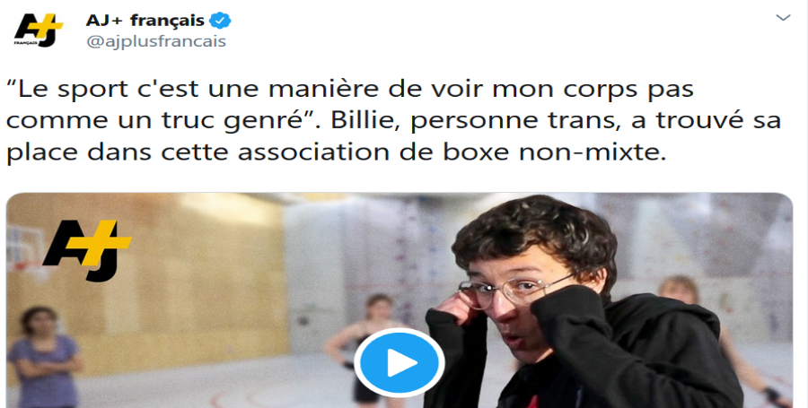AJ+ en françaisLa rédaction d'AJ+ en français, média en ligne du groupe Al Jazeera, met régulièrement en avant des thématiques liées aux LGBTIphobies et aux droits des personnes LGBTI dans ses vidéos publiées sur les réseaux sociaux.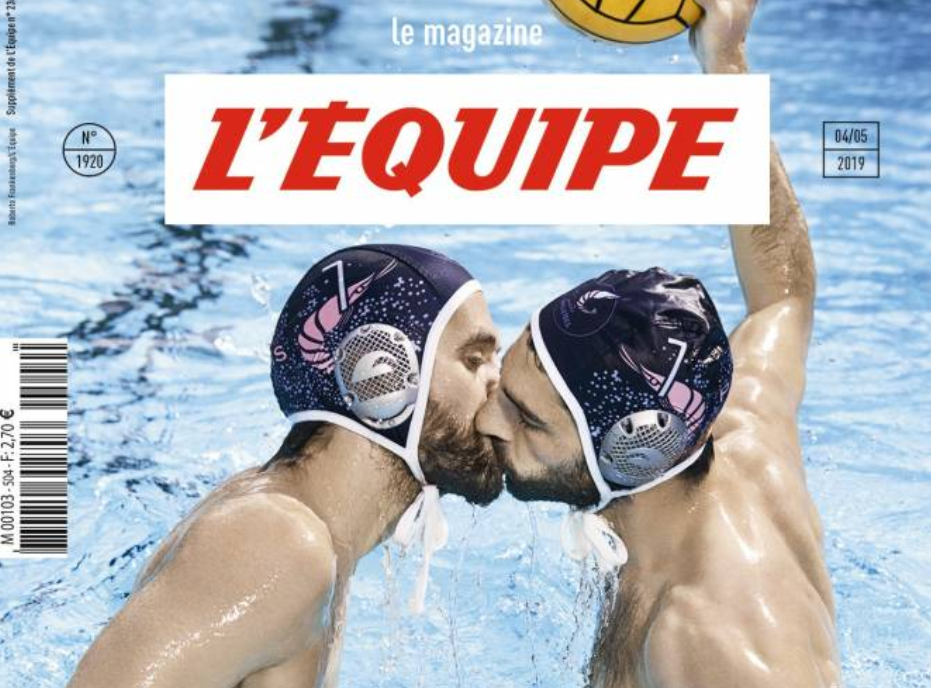Le magazine L’ÉquipeOutre plusieurs sujets et reportages consacrés aux questions LGBTI, le supplément hebdomadaire de L'Équipe a publié à sa une, en mai 2019, deux joueurs de waterpolo gays dans le cadre d'un dossier sur la lutte contre l'homophobie dans le sport.francetv slashLa rédaction de cette plateforme numérique de France Télévisions produit et diffuse de nombreux contenus en liens avec les questions LGBTI, tels que le module Sexy soucis, consacré à la sexualité, le documentaire sur la transition du comédien Océan, ou encore une série intitulée "Son coming out".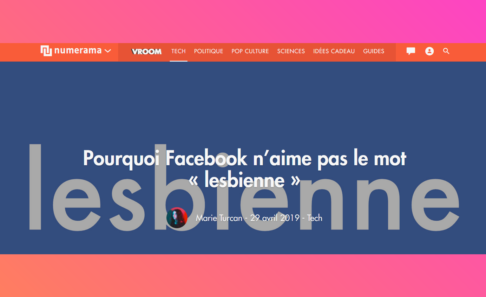NumeramaNumerama couvre les thématiques liées aux personnes LGBTI et au numérique, par exemple dans ses articles sur les traductions homophobes de Reverso ou l'invisibilisation du mot "lesbienne" dans les moteurs de recherches. La rédaction s'est également illustrée par un traitement engagé de la "Ligue du LOL".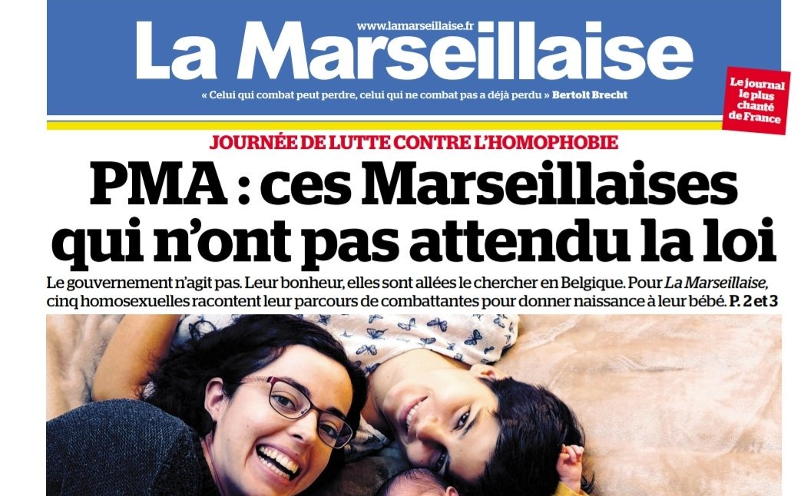La MarseillaiseLe quotidien régional a fait sa une sur les actes homophobes dont ont été victimes deux résidents du Refuge en août 2018, ainsi que sur "ces Marseillaises qui n’ont pas attendu la loi" pour avoir recours à une PMA le 17 mai 2019. -
Dans la catégorie « Sport »
Largement médiatisé, le sport reste néanmoins un lieu de discriminations et d’omerta, comme les médias l'ont justement remarqué à plusieurs reprises au cours de l'année écoulée. Certain·e·s sportif·ve·s brisent parfois la loi du silence. Un OUT d’or n’est pas de trop pour en inciter d’autres à montrer qu’on peut être un·e athlète de haut niveau et LGBTI.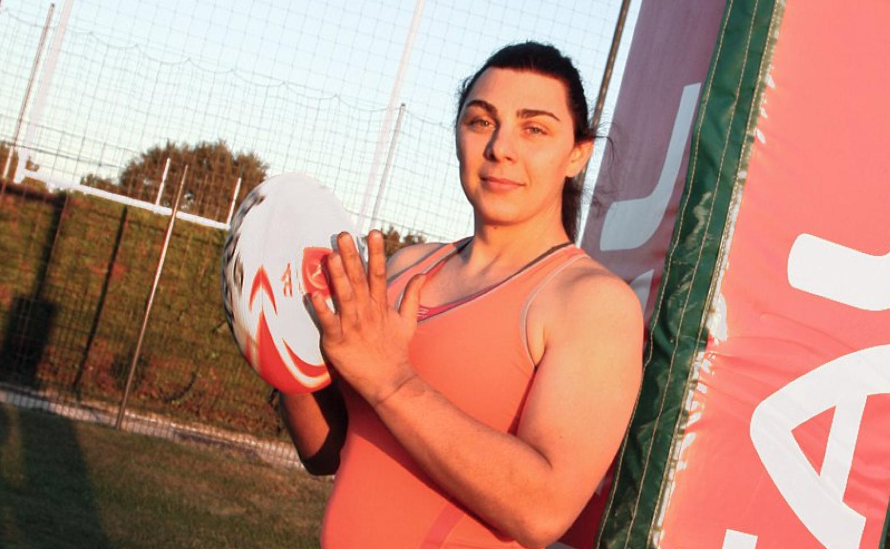Alexia CerenysC'est une pionnière. Arrivée en début de saison dans le club béarnais de Lons après avoir évolué chez les féminines du Stade Montois, Alexia Cerenys est ainsi devenue la première rugbywoman trans à évoluer en Top 16, la première division du rugby féminin en France. Le magazine L’Équipe lui a consacré un long portrait en septembre 2018.Ramon R. Martinez GionVolleyeur professionnel aux Spacer’s de Toulouse (Ligue A) jusqu'à la fin de cette saison, le joueur néerlandais est un des seuls sportifs, dans le sport collectif masculin, à assumer son homosexualité tout en étant encore en activité. Dans Têtu et Le Parisien, il explique qu’il n’a jamais eu à se cacher auprès des ses coéquipiers. Une exception encore trop rare dans le monde du sport.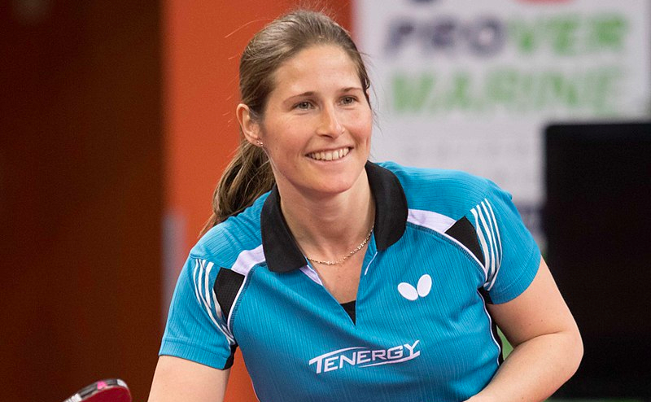Carole Grundisch"Je me sens libre." Championne de France de simple et de double, la pongiste a raconté avec simplicité dans les colonnes du Parisien, en octobre dernier, la naissance de sa petite fille et son mariage avec sa compagne à l’été dernier, tout en expliquant en quoi faire son coming out est toujours plus difficile dans le milieu du sport.
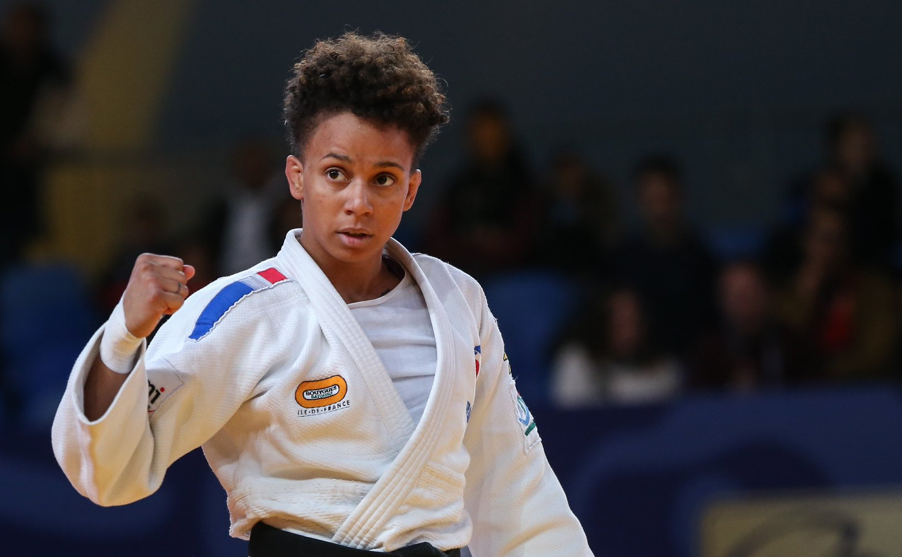Amandine Buchard"C’est fatigant de se cacher." En septembre 2018, Amandine Buchard, cadre de l’équipe de France de judo, fait son coming out dans Le Parisien. Championne d'Europe 2017 et médaillée de bronze aux championnats du monde 2018, elle évoque, dans cet entretien, sur son mariage avec la judokate allemande Nieke Nordmeyer, les réactions du monde du judo et son désir de fonder une famille.
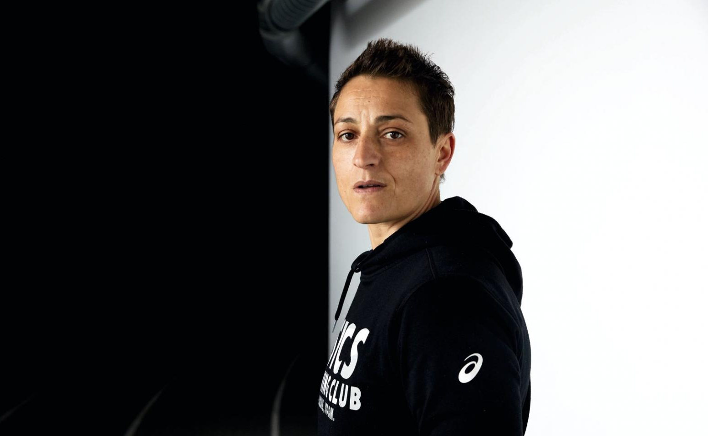Laurence ManfrediQuatorze fois championne de France de lancer du poids en plein air, ancienne recordwoman de France de la discipline, participation aux championnats d’Europe et du monde et aux Jeux Olympiques, Laurence Manfredi est une figure de l’athlétisme français du début des années 2000. En mai, dans le numéro du magazine L’Équipe consacré à l’homophobie dans le sport, elle explique pourquoi son homosexualité a fait d’elle une sportive de haut niveau et une championne.